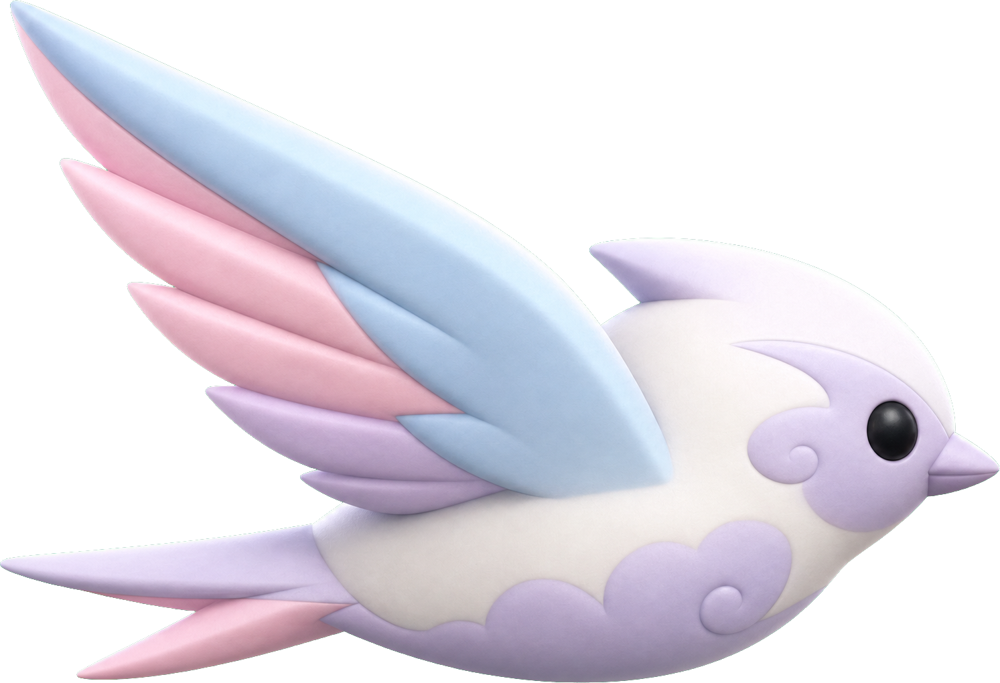
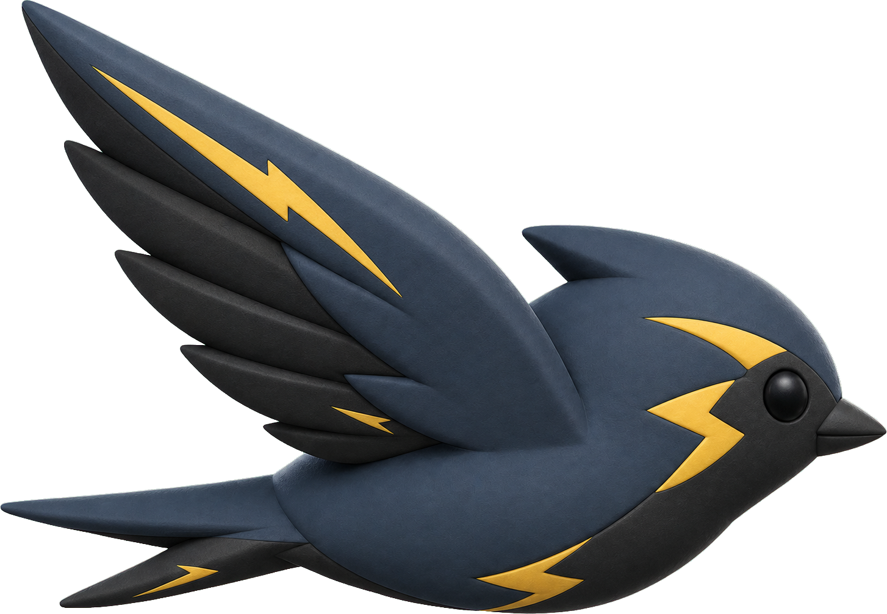
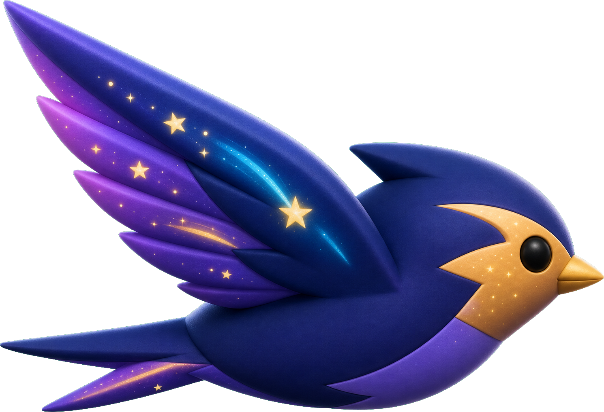

鳥の空域 bird_small（原型/master）

雲海 bird_mist（真珠白＋雲うず腹）

嵐 bird_storm（鈍色＋稲妻アクセント）

星脈 bird_stars（藍＋星屑の翼）






挙動（穴へX合わせ・斜めダイブ・ステップ穴帯）は4地域で共通。スイフトの絵だけ地域別に差し替えて特色を出す方針。描画時に地域スプライトを解決＝遅延読込でも地域絵が出る（読込前のみbird_smallにフォールバック）。